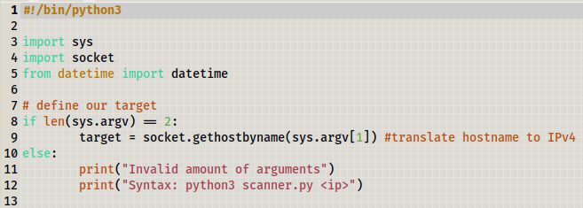

Building A Port Scanner
For this session we will build a port scanner which will scan the ports of the IP address we give it, and return information on on it - if it's an open or closed port.
We create a file with gedit and call it scanner.py.
gedit scanner.py&

create new file using gedit

scanner.py
We have imported sys so we can keep track of the number of arguments are passed to your script. sys is a module that connects the script to the machine's system.
argv is the same as placing a placeholder with $ in bash. So Becasue we have len(sys.argv) == 2, we are saying that the total number of arguements should be 2x. When we write sys.argv[1], we are referencing to the second arguement.
Remember the first argument is the Python file that you are running and the second arguement is the ip address you are searching through.
In our if statement, if the user does not enter an argument when running the script, the will get an error message reminding them to add an IP address. If the user enters an IP address it will be printed to the screen.
Notice we are getting the host by name and then converting it to an IP address. This is because if the user enters a host name instead (where it has a DNS leading to an IP address).
We can check if this works by running the script without an IP address.
python3 scanner.py

We get a message to add an IP address
Next we will add a banner to show the user who we are scanning and the time the scan started at.

Print out the target with the time of scan

Now we will create a try block to make an attempt to connect to a port. With a try block we first try to run the code. Then if there is an error we raise an exception which we will create a print statement for.
try block

Lets break down what we are doing line by line. We first want to search through the ports between 50 - 85 (we could
search for all ports but theres over 65,000!).
for port in range(50, 85):

Search ports between 49 - 84
Then we declare the type of connection we want to make - connect to an IPv4 IP address and a port.
s = socket.socket(socket.AF_INET, socket.SOCK_STREAM)

Create a connection to an IPv4 address and a port
When we connect to a port we don't want to be waiting for too long to see if there's a connection or not, so we set
a default on the time. It will take 1x second to check for a connection then moves on to find the next port.
socket.setdefaulttimeout(1)

Sets a default on how long each search for a connection should take
Now the s variable can give us access to a socket, all we need to do is pass in an IP address and a port. We store this connection to the result variable. connect_ex returns checks for an invalid connection; it returns 0 if the connection is valid and 1 if the connection is invalid.
result = s.connect_ex((target, port))

Checks for an invalid connection
So now we can just check if we get a 1 or a 0 to determine our result. We want to check if the port is open; if it is, we print a message to the user letting them know the connection is open.
if result == 0

Checks if the connection exsits then returns the port number
Now we will add our exceptions which will be executed if the try block doesn't work.

KeyboardInterrupt is an execption for when we use the keyboard to exit. If this is picked up then we do a system exit.
socket.gaierror is for when the DNS cannot find the host name, we will do a system exit.
socket.error is for when we cannot make any type of connection. If this is picked up then we do a system exit.
We must note that this is not the best method to scan for ports as it will take 1 second for each scan (roughly 35 seconds). There are tools that can scan ports much more effieciently and quicker, plus we could imporve the logic of this script by using what is known as threading - where we run multiple connection scans at the same time.
I will run this against my router. I'm using my Kali Linux from my Windows machine, so I will check for the routers IP address in the Windows command promt. Once I enter ipconfig, we can find the routers IP address if we look for the Default Gateway number.
ipconfig

This is taken from my wireless LAN (router)
python3 scanner.py 192.168.1.1

This tells us which ports are open in the router
The router should have port 53 open becasue of DNS & port 80 to access the web interface. Please note how long it takes, this is another example of why this is not the best way (especially if you have a slow internet speed).
We can store the connections in a file and then do an nmap / netcat seacrh on them later.